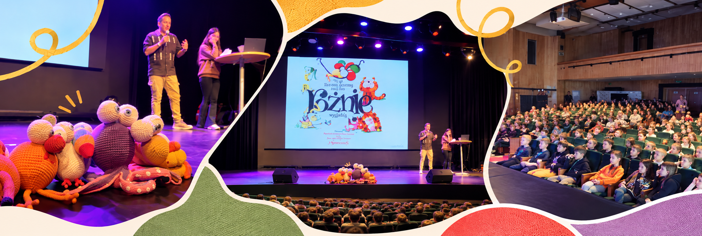
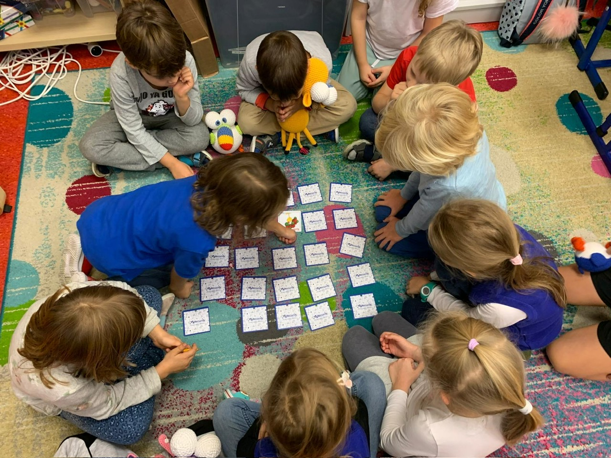
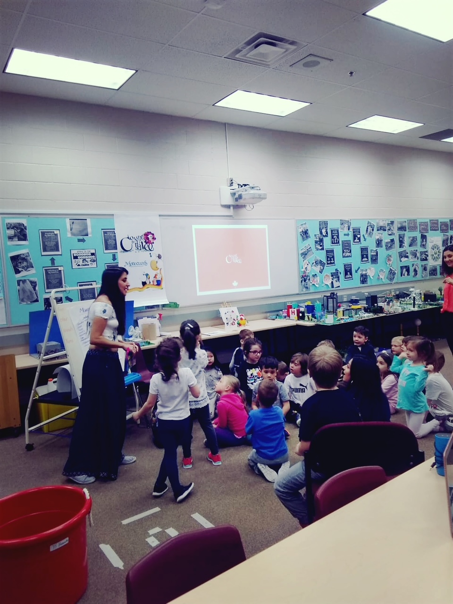

01
UCZYMY SIĘ AKCEPTOWAĆ
Różnice sprawiają, że każdy z nas jest wyjątkowy.
Są rzeczy, których nie wystarczy się nauczyć. Trzeba ich doświadczyć.

MONOCUCOS tworzy opowieści i doświadczenia, które pomagają dzieciom poznawać własne emocje, lepiej rozumieć innych i odkrywać nowe sposoby budowania relacji ze światem.
Różnice sprawiają, że każdy z nas jest wyjątkowy.
Każdy ma swoją historię.
Każda emocja ma nam coś do powiedzenia.
Nikt nie powinien czuć się samotny.
Każdego dnia możemy odkryć w sobie coś nowego.
Kiedy historie wychodzą poza strony książek, zaczynają dziać się niezwykłe rzeczy.
W MONOCUCOS wierzymy, że opowieści mogą również tworzyć przestrzeń do spotkań, dostrzegania naszych różnic i odkrywania tego, co nas łączy.
Dlatego świat naszych postaci i historii wychodzi poza książki i dociera do dzieci w szkołach oraz społecznościach. Tam wyobraźnia staje się okazją do wspólnego działania, refleksji i uczenia się życia razem.
Niektóre rzeczy nabierają szczególnego znaczenia, gdy doświadczamy ich razem.
Spotkania MONOCUCOS łączą dzieci i społeczności szkolne we wspólnych działaniach, które zachęcają do refleksji nad szacunkiem, włączeniem społecznym, autentycznością i życiem razem.
Poprzez świat naszych opowieści chcemy pomagać każdemu dziecku dostrzegać wartość różnorodności, odkrywać, co może wnieść do życia innych, i rozumieć, że każdy ma swoje miejsce w budowaniu bardziej życzliwej społeczności.



Różnice kulturowe, języki i granice nie zmieniają tego, co nas łączy.
MONOCUCOS dzieliło się swoimi opowieściami i doświadczeniami ze społecznościami edukacyjnymi w różnych krajach, przekazując przesłanie włączenia, szacunku i wspólnego życia.
Każde spotkanie przypomina nam, że świat dla wszystkich zaczyna się wtedy, gdy dostrzegamy, że każdy z nas do niego należy.
Bo kiedy uczymy się akceptować, słuchać, rozumieć emocje, wspierać innych i rozwijać się, uczymy się także żyć razem.